# load packages
library(tidyverse) # for data wrangling and visualization
library(broom) # for formatting model output
library(ggformula) # for creating plots using formulas
library(scales) # for pretty axis labels
library(knitr) # for pretty tables
library(moderndive) # for house_price dataset
library(kableExtra) # also for pretty tables
library(patchwork) # arrange plots
# set default theme and larger font size for ggplot2
ggplot2::theme_set(ggplot2::theme_bw(base_size = 20))SLR: Transformations
Computational set up
Data: house_prices
- Contains house sale prices for King County, which includes Seattle, from homes sold between May 2014 and May 2015
- Obtained from Kaggle.com
glimpse(house_prices)Rows: 21,613
Columns: 21
$ id <chr> "7129300520", "6414100192", "5631500400", "2487200875", …
$ date <date> 2014-10-13, 2014-12-09, 2015-02-25, 2014-12-09, 2015-02…
$ price <dbl> 221900, 538000, 180000, 604000, 510000, 1225000, 257500,…
$ bedrooms <int> 3, 3, 2, 4, 3, 4, 3, 3, 3, 3, 3, 2, 3, 3, 5, 4, 3, 4, 2,…
$ bathrooms <dbl> 1.00, 2.25, 1.00, 3.00, 2.00, 4.50, 2.25, 1.50, 1.00, 2.…
$ sqft_living <int> 1180, 2570, 770, 1960, 1680, 5420, 1715, 1060, 1780, 189…
$ sqft_lot <int> 5650, 7242, 10000, 5000, 8080, 101930, 6819, 9711, 7470,…
$ floors <dbl> 1.0, 2.0, 1.0, 1.0, 1.0, 1.0, 2.0, 1.0, 1.0, 2.0, 1.0, 1…
$ waterfront <lgl> FALSE, FALSE, FALSE, FALSE, FALSE, FALSE, FALSE, FALSE, …
$ view <int> 0, 0, 0, 0, 0, 0, 0, 0, 0, 0, 0, 0, 0, 0, 0, 3, 0, 0, 0,…
$ condition <fct> 3, 3, 3, 5, 3, 3, 3, 3, 3, 3, 3, 4, 4, 4, 3, 3, 3, 4, 4,…
$ grade <fct> 7, 7, 6, 7, 8, 11, 7, 7, 7, 7, 8, 7, 7, 7, 7, 9, 7, 7, 7…
$ sqft_above <int> 1180, 2170, 770, 1050, 1680, 3890, 1715, 1060, 1050, 189…
$ sqft_basement <int> 0, 400, 0, 910, 0, 1530, 0, 0, 730, 0, 1700, 300, 0, 0, …
$ yr_built <int> 1955, 1951, 1933, 1965, 1987, 2001, 1995, 1963, 1960, 20…
$ yr_renovated <int> 0, 1991, 0, 0, 0, 0, 0, 0, 0, 0, 0, 0, 0, 0, 0, 0, 0, 0,…
$ zipcode <fct> 98178, 98125, 98028, 98136, 98074, 98053, 98003, 98198, …
$ lat <dbl> 47.5112, 47.7210, 47.7379, 47.5208, 47.6168, 47.6561, 47…
$ long <dbl> -122.257, -122.319, -122.233, -122.393, -122.045, -122.0…
$ sqft_living15 <int> 1340, 1690, 2720, 1360, 1800, 4760, 2238, 1650, 1780, 23…
$ sqft_lot15 <int> 5650, 7639, 8062, 5000, 7503, 101930, 6819, 9711, 8113, …Variables
- Outcome
price: the sale price
- Predictor
sqft_living: the square footage of the home
Recap: Fit the model
hp_fit <- lm(price ~ sqft_living, data = house_prices)
tidy(hp_fit) |> kable(digits = 2)| term | estimate | std.error | statistic | p.value |
|---|---|---|---|---|
| (Intercept) | -43580.74 | 4402.69 | -9.90 | 0 |
| sqft_living | 280.62 | 1.94 | 144.92 | 0 |
- Model: \(\text{price} = -43580.74 + 280.62\times\text{sqft_living}\)
- Interpretation: If the square footage of the house increases by 1, the price increases by and average of $280.62 and a (theoretical) house with 0 square feet with cost $-43,580.74.
Recap: Fit the model
Code
gf_point(price ~ sqft_living, data = house_prices,
alpha = 0.25, size = 0.01) |>
gf_smooth(method = "lm", color = "red") |>
gf_labs(x = "Square Footage",
y = "Sale Price") |>
gf_refine(scale_y_continuous(labels = label_dollar()),
scale_x_continuous(labels = label_number()))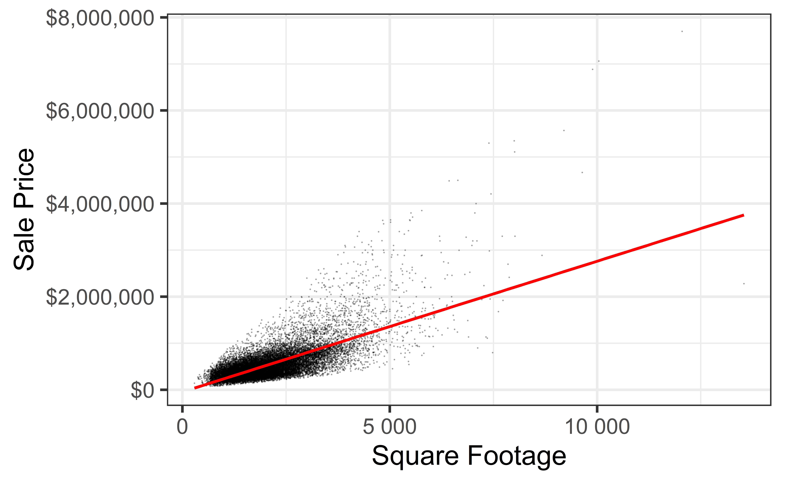
Recap: Model conditions
- Linearity: There is a linear relationship between the outcome and predictor variables
- Constant variance: The variability of the errors is equal for all values of the predictor variable
- Normality: The errors follow a normal distribution
- Independence: The errors are independent from each other
. . .
How should we check these assumptions?
Recap: Residual Histogram
Code
hp_aug <- augment(hp_fit)
gf_histogram(~.resid, data = hp_aug, bins = 100) |>
gf_labs(x = "Residual",
y = "Count",
title = "Residual Histogram")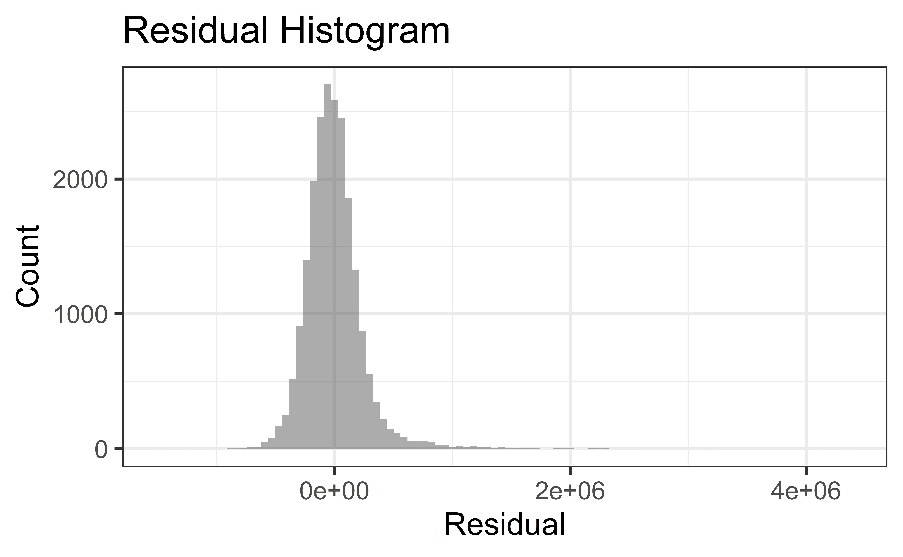
Recap: QQ-Plot of Residuals
Code
gf_qq(~.resid, data = hp_aug) |>
gf_qqline() |>
gf_labs(x = "Theoretical quantile",
y = "Observed quantile",
title = "Normal QQ-plot of residuals")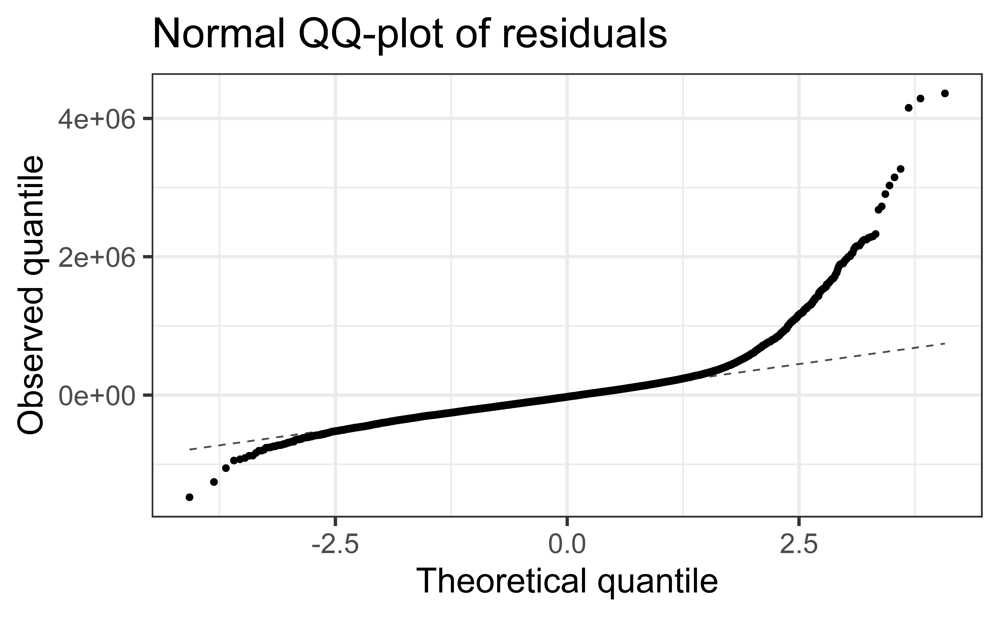
Recap: Residuals vs. Fitted Values
Code
gf_point(.resid ~ .fitted, data = hp_aug,
alpha = 0.25, size = 0.01) |>
gf_hline(yintercept = 0, linetype = "dashed") |>
gf_labs(
x = "Fitted value", y = "Residual",
title = "Residuals vs. fitted values"
)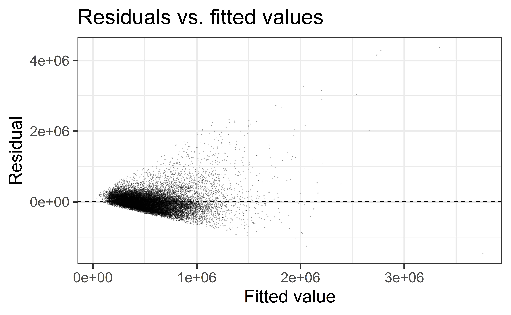
:::
Are model conditions satisfied?
- Linearity:
❓ - Constant variance:
❌ - Normality:
❌ - Independence:
✅
What to do when regression conditions are violated
Examples:
- Lack of normality in residuals
- Patterns in residuals
- Heteroscedasticity (nonconstant variance)
- Outliers: influential points, large residuals
Transformations
Data Transformations
Can be used to:
- Address nonlinear patterns
- Stabilize variance
- Remove skewness from resiudals
- Minimize effects of outliers
Common Transformations
For either the response \(Y\) or predictor \(X\):
- Logarithm \(Z \to \log(Z)\)
- Note: “log” means “log base \(e\)”
- Square Root \(Z \to \sqrt{Z}\)
- Exponential \(Z \to e^Z\)
- Power functions \(Z \to Z^2, Z^3, Z^4, \ldots\)
- Reciprocal \(Z \to 1/Z\)
Example: Planets
planets <- read_csv("data/planets.csv")Rows: 9 Columns: 7
── Column specification ────────────────────────────────────────────────────────
Delimiter: ","
chr (1): Planet
dbl (6): Distance, Year, Mass, Day, Diameter, Gravity
ℹ Use `spec()` to retrieve the full column specification for this data.
ℹ Specify the column types or set `show_col_types = FALSE` to quiet this message.- \(Y =\) length of the “year” for planets
- \(X =\) distance from the Sun
Example: Planets
- Model: \(Y = \beta_0 + \beta_1\times X\)
Code
gf_point(Distance ~ Year, data = planets) |>
gf_lm()Warning: Using the `size` aesthetic with geom_line was deprecated in ggplot2 3.4.0.
ℹ Please use the `linewidth` aesthetic instead.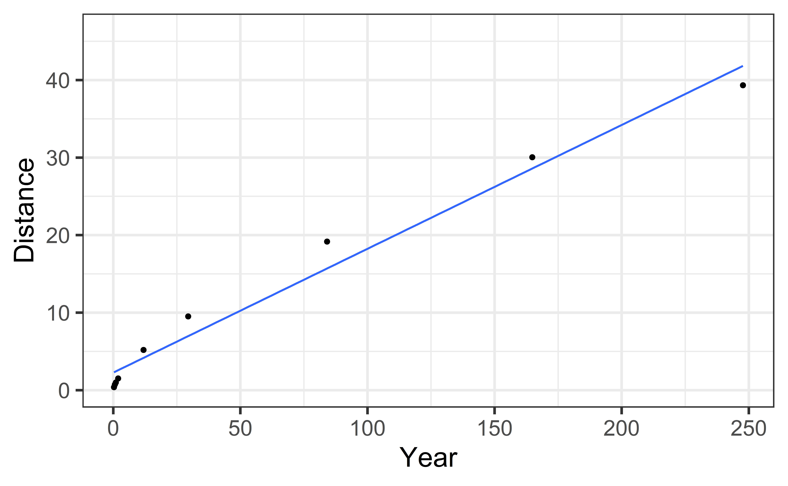
Example: Planets
- Model: \(\log(Y) = \beta_0 + \beta_1\times X\)
Code
gf_point(log(Distance) ~ Year, data = planets) |>
gf_lm()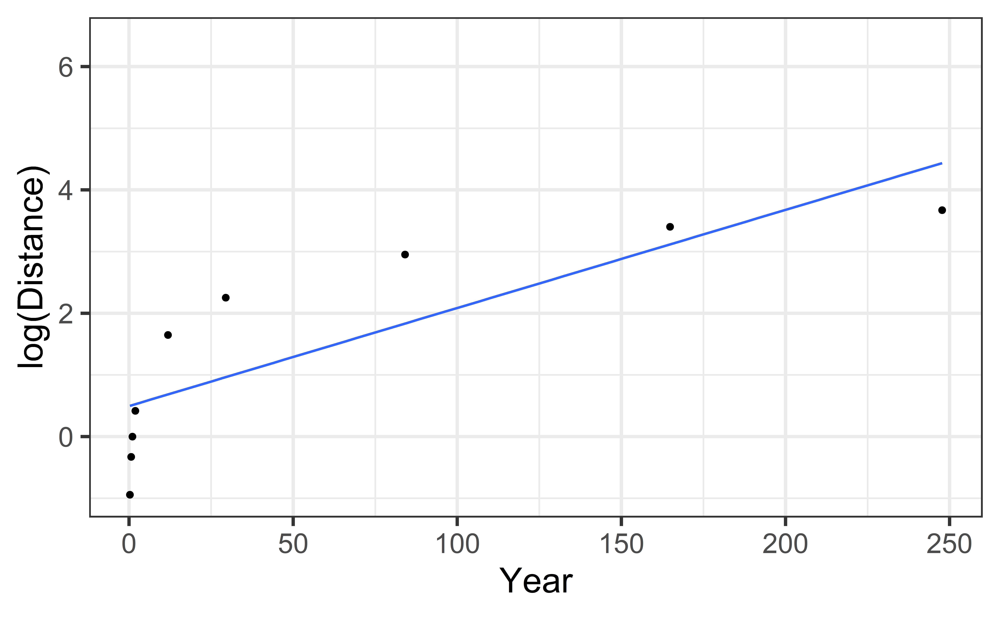
Example: Planets
- Model: \(Y = \beta_0 + \beta_1\times \log(X)\)
Code
gf_point(Distance ~ log(Year), data = planets) |>
gf_lm()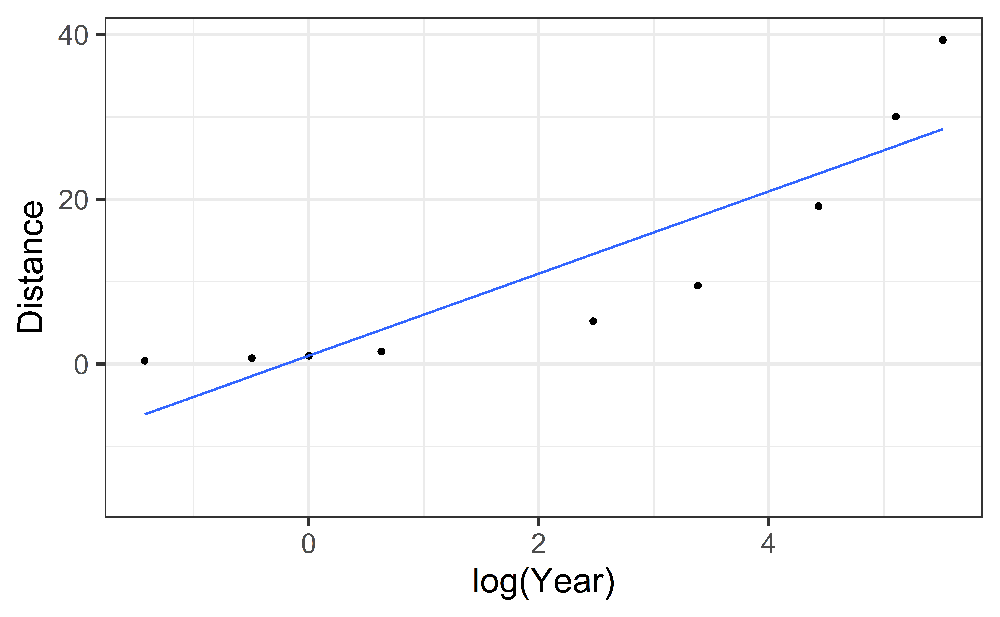
Example: Planets
- Model: \(\log(Y) = \beta_0 + \beta_1\times \log(X)\)
Code
gf_point(log(Distance) ~ log(Year), data = planets) |>
gf_lm()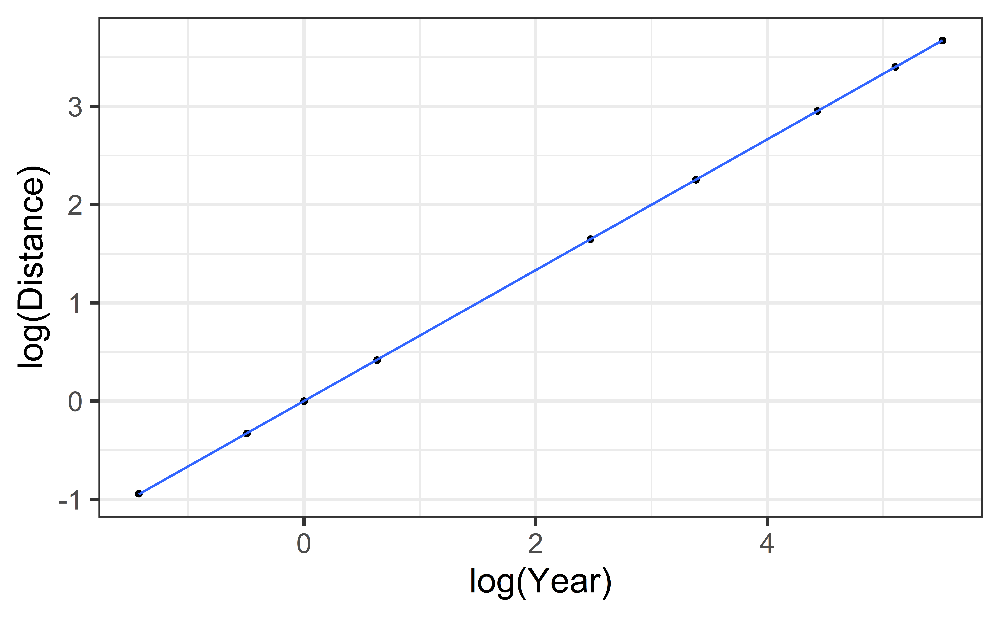
Example: Mammal Species
SpeciesArea <- read_csv("data/SpeciesArea.csv")Rows: 14 Columns: 5
── Column specification ────────────────────────────────────────────────────────
Delimiter: ","
chr (1): Name
dbl (4): Area, Species, logArea, logSpecies
ℹ Use `spec()` to retrieve the full column specification for this data.
ℹ Specify the column types or set `show_col_types = FALSE` to quiet this message.- \(Y =\) number of mammal species on an island
- \(X =\) area of the island
Example: Mammal Species
- Model: \(Y = \beta_0 + \beta_1\times X\)
Code
gf_point(Species ~ Area, data = SpeciesArea) |>
gf_lm()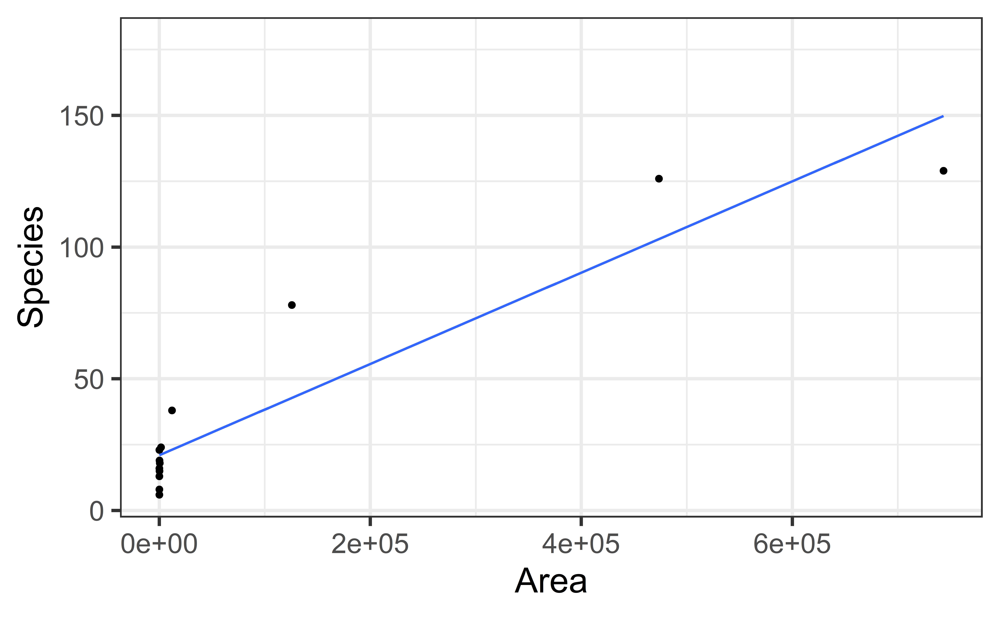
Example: Mammal Species
- Model: \(\log(Y) = \beta_0 + \beta_1\times \log(X)\)
Code
gf_point(log(Species) ~ log(Area), data = SpeciesArea) |>
gf_lm()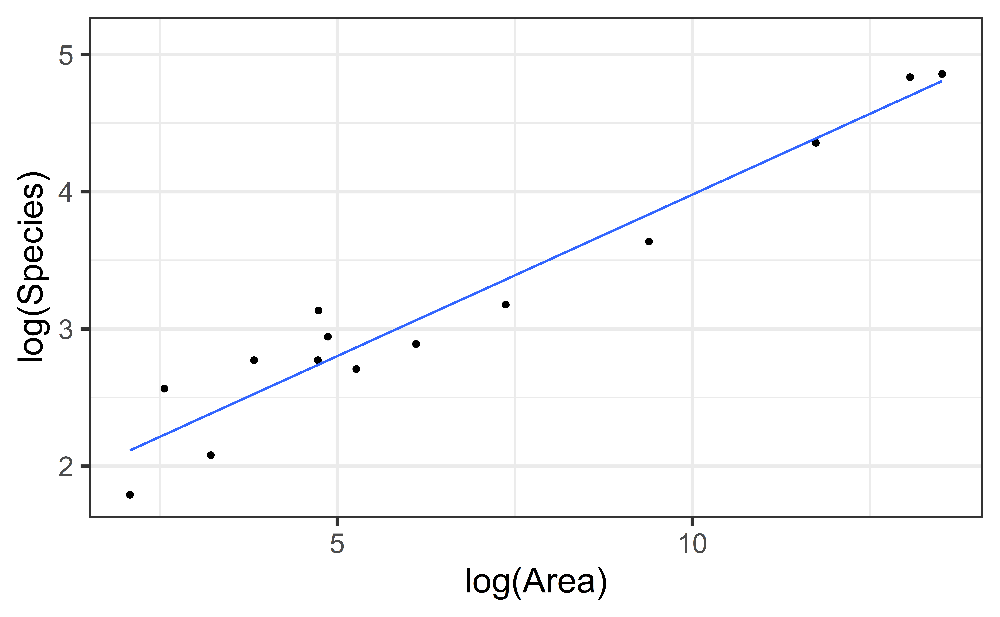
Why a Log Transformation?
Some relationship are multiplicative (not linear)
Example: Area of a circle
\[ \begin{aligned} A &= \pi r^2 \text{ (not linear)}\\ \log(A) &= \log(\pi r^2) = \log(\pi) + 2\log(r)\\ \log(A) &= \beta_0 + \beta_1\times \log(r)\\ \implies & \log(A) \text{ is a linear function of } \log(r) \end{aligned} \]
Look for:
- Strongly right-skewed distributions
- Curvative in scatterplot
- Increasing variability in scatterplot
Back to house_sales
Code
p1 <- gf_point(price ~ sqft_living, data = house_prices,
alpha = 0.25, size = 0.01) |>
gf_smooth(method = "lm", color = "red") |>
gf_labs(x = "Square Footage",
y = "Sale Price") |>
gf_refine(scale_y_continuous(labels = label_dollar()),
scale_x_continuous(labels = label_number()))
p2 <- gf_point(log(price) ~ sqft_living, data = house_prices,
alpha = 0.25, size = 0.01) |>
gf_smooth(method = "lm", color = "red") |>
gf_labs(x = "Square Footage",
y = "log(Sale Price)") |>
gf_refine(scale_y_continuous(labels = label_dollar()),
scale_x_continuous(labels = label_number()))
p3 <- gf_point(price ~ log(sqft_living), data = house_prices,
alpha = 0.25, size = 0.01) |>
gf_smooth(method = "lm", color = "red") |>
gf_labs(x = "log(Square Footage)",
y = "Sale Price") |>
gf_refine(scale_y_continuous(labels = label_dollar()),
scale_x_continuous(labels = label_number()))
p4 <- gf_point(log(price) ~ log(sqft_living), data = house_prices,
alpha = 0.25, size = 0.01) |>
gf_smooth(method = "lm", color = "red") |>
gf_labs(x = "log(Square Footage)",
y = "log(Sale Price)") |>
gf_refine(scale_y_continuous(labels = label_dollar()),
scale_x_continuous(labels = label_number()))
(p1 + p2)/ (p3 + p4)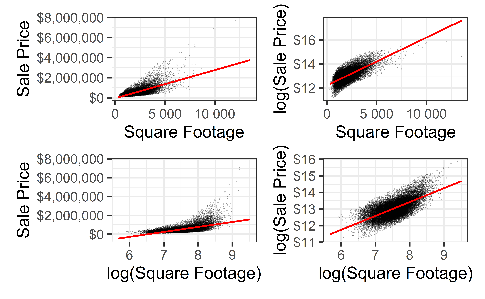
Fitting Transformed Models
logprice_model <- lm(log(price) ~ sqft_living, data = house_prices)
tidy(logprice_model) |> kable()| term | estimate | std.error | statistic | p.value |
|---|---|---|---|---|
| (Intercept) | 12.2184641 | 0.0063741 | 1916.8830 | 0 |
| sqft_living | 0.0003987 | 0.0000028 | 142.2326 | 0 |
\[ \begin{aligned} \log(Y) &= 12.22 + 3.99\times 10^{-4}\times X\\ Y &= e^{12.22 + 3.99\times 10^{-4}\times X}\\ &= 202805\times e^{3.99\times 10^{-4}\times X} \end{aligned} \]
loglog_model <- lm(log(price) ~ log(sqft_living), data = house_prices)
tidy(loglog_model) |> kable()| term | estimate | std.error | statistic | p.value |
|---|---|---|---|---|
| (Intercept) | 6.729916 | 0.0470620 | 143.0011 | 0 |
| log(sqft_living) | 0.836771 | 0.0062233 | 134.4587 | 0 |
\[ \begin{aligned} \log(Y) &=6.73 + 0.837\times \log(X)\\ \log(Y) &= \log(e^{6.73}) + \log(X^{0.837})\\ Y &= 873.15\times X^{0.837} \end{aligned} \]
Residuals Histograms
Code
lp_aug <- augment(logprice_model)
ll_aug <- augment(loglog_model)
p1 <- gf_histogram(~.resid, data = lp_aug, bins = 100) |>
gf_labs(x = "Residual",
y = "Count",
title = "Log Price Residuals")
p2 <- gf_histogram(~.resid, data = ll_aug, bins = 100) |>
gf_labs(x = "Residual",
y = "Count",
title = "Log-Log Residuals")
(p1 + p2)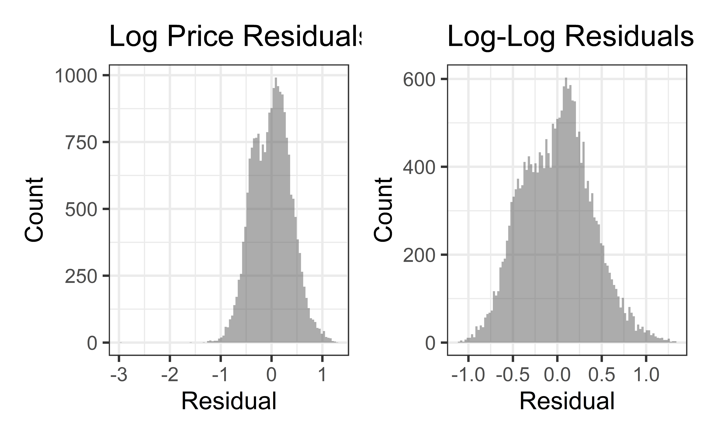
QQ-Plots of Residuals
Code
p1 <- gf_qq(~.resid, data = lp_aug) |>
gf_qqline() |>
gf_labs(x = "Theoretical quantile",
y = "Observed quantile",
title = "Log Price QQ")
p2 <- gf_qq(~.resid, data = ll_aug) |>
gf_qqline() |>
gf_labs(x = "Theoretical quantile",
y = "Observed quantile",
title = "Log-Log QQ")
p1 + p2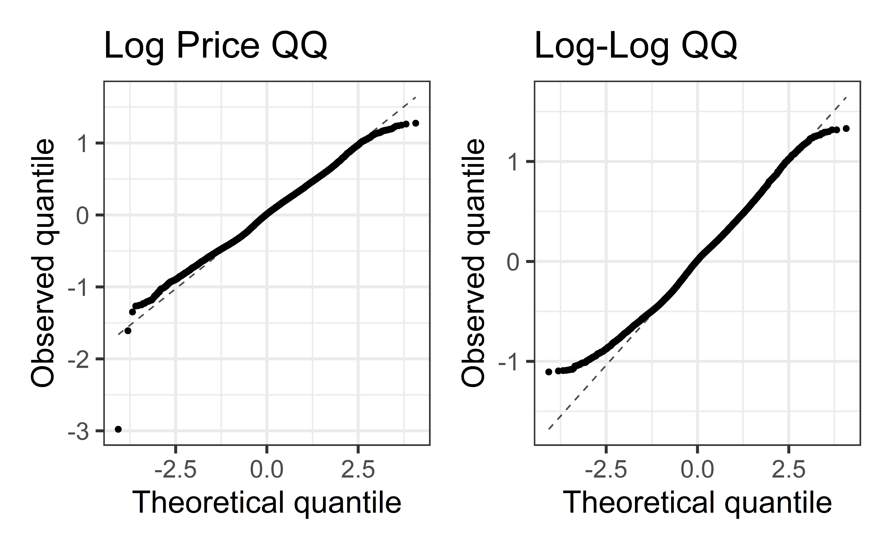
Residuals vs. Fitted Values
Code
p1 <- gf_point(.resid ~ .fitted, data = lp_aug,
alpha = 0.25, size = 0.01) |>
gf_hline(yintercept = 0, linetype = "dashed") |>
gf_labs(
x = "Fitted value", y = "Residual",
title = "Log Price Model"
)
p2 <- gf_point(.resid ~ .fitted, data = ll_aug,
alpha = 0.25, size = 0.01) |>
gf_hline(yintercept = 0, linetype = "dashed") |>
gf_labs(
x = "Fitted value", y = "Residual",
title = "Log-Log Model"
)
p1 + p2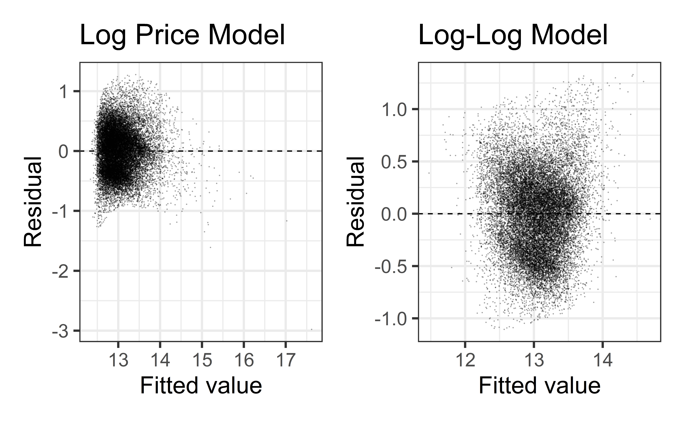